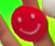
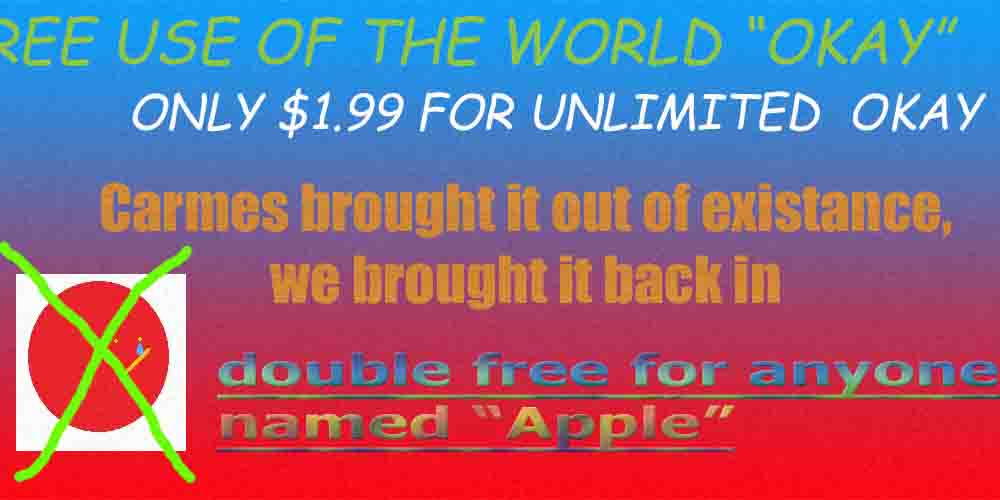
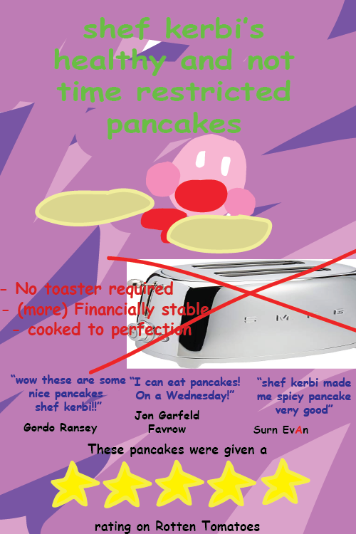
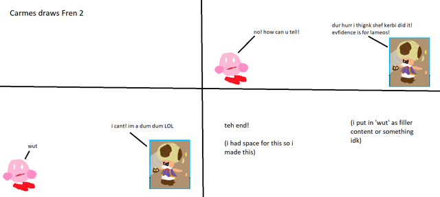
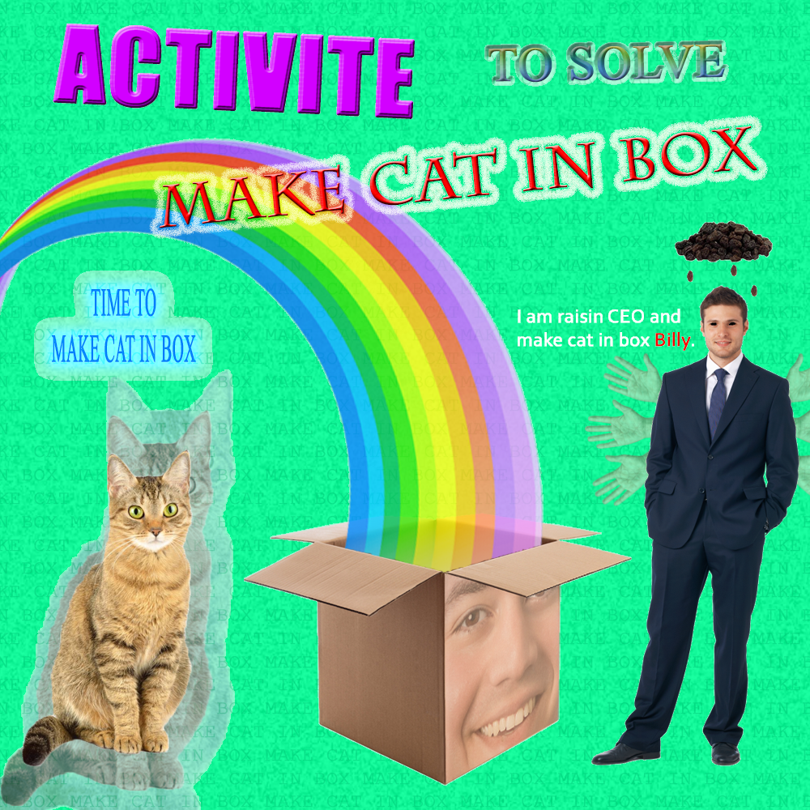

Episode 41
February 28th, 2020
Back to News Archive
| Back to Homepage | Back to Shef Werld<< Previous Episode | >> Next Episode

"okay"
$5.00 | ~8 ghost dollars | ⭐25 coins
Does not include potential cost from surprise mechanics (they're not lootboxes so it's not illegal!!!), purchases from Shef Kerbi's Apparel or preordering the Special Edition
-------------------------
ANNOUNMENT UPDATE
The new news page style has been added to all other news articles.
CARMES FOUND IN J-POP MUSIC VIDEO
Some badge-like thing on a random girl's finger that looks like Carmes has been found in a music video for a cool J-Pop song.
This is what it looks like:


INVASION???
Recently, a flying saucer has descended from outer space, menacingly floating above Popp Stah just by doing absolutely nothing. Speculation is that it got here by following a worp star sent by the Dreem Lend Space Program. Further inspection of the saucer reveals it contains a cup of tea. We will update this story as it unfolds.
News That is Okay
Recently, Carmes Inc. wiped the word "Okay" out of existence, but "CrazeePi's disembodied voice (not sure who they are)" brought it back, which is why it's in this news article!
Also the wiping supposedly had caused a black hole to appear, one witness says, but evidence points to it having actually been a graphical glitch with shadows from a cloud.

SANDWICH TREND
Peanut butter and jelly and chocolate and potato chip sandwiches have been on sale in several sandwich shops, which is very popular among customers. The sandwich is what a guy in SKNN's first news report ate[citation needed], without the banana, because in the 2020 Guinness Book of Popp Stah Laws, Keyn DDDD banned banana in sandwiches because he thought they were 'too weird'.
Variants of the sandwich put jam n the sandwich instead of jelly.
The under-construction sandwich shop in Burlington will sell that sandwich when it hopefully opens later this year.

...and it appears that the New News Generation Machien has started up again for the first time in a while:
THE SECRET SERVICE HAS ARRIVED AT YOUR HOUSE! THEY'RE GONNA KILL US ALL!
WE HAVE TO DIE NOW!
WE MUSTN'T BEATEN BY A GOVERNMENT THAT WANTS TO EMBODY A NATIONAL IDIOTIC STEREOTYPE!
THE SECURITY GUARDS ARE HERE! THEY WILL NOT WIN AGAINST OUR STRENGTH AND FEAR!
WE SHALL SURVIVE, BUT ONLY BECAUSE YOU WILL LIVE!
YOU SHOOT THEM DOWN WITH AN ULTIMATE AMAZING SPEED!
THE END

Now I don't wanna give my own opionion but...
OPIONION WITH SHEF KERBI
okay "okay, okay", okay; okay, okay
So we told you Shef Kerbi News Network fans on our Scratch page that you could post anything with the #SKNN hashtag and you could end up in our paper! I promise this isn't just a chance for us to roast our audience, this is a very civil forum.
We began this issue's section with
"I’m scared of u"
Wait Carson is a viewer of Shef Kerbi News Network what??? That's quite the pog moment chat, I know our employees will be very proud.
EZ-Guy wrote:
Uncrustables have crust
And they said that antifreeze couldn't freeze because it was anti-freeze. Just one blast from Frozone and my worp star engine completely locked up. The repair guy at the worp star repair shop was impressed because it doesn't get nearly that cold in Dreem Lend
speedslinger wrote:
"Did somebody say Carson????"
uh. uh... he's at the back of the room. He took my mouse and is now wandering around a jungle
just_in wrote:
"Pancakes are quite controversial things - I suggest that banning them outright would help further the development of Dreem Lend."
Depends on the particular variety of pancake - some are normal and tasty while others are prone to causing large arguments. Eventually we may bring to light the destruction that a particular variety of pancake has caused, but for know you can buy my pancakes (totally not a cover up I promise)
If you would like to submit your own opionion for Shef Kerbi, just go to our social media, on Twitter, Instagram or Scartch.
But prefably Scratch because that's what everyone uses
----------------
COMIX
by Carmes
Carmes draws Fren #2: Toadsworth

ACTIVITY
by CrazeePi's Disembodied Voice and Carmes

{kind=link}
Anime Cosmetics are releasing a new product soon! Unscramble the following words and use the first letter of them to reveal the name of the new product!
SELRA
RAUNISENC
GOPPO IS
WINCDASH
ONTE HESBA
HEPINO
ARCEMS
KBER SPOP
weather i guess
Today is max 19 min 3, with some rain in the evening. Tomorrow is max 34 min 23 oh come on universe i thought we were over this
THANK YOU FOR WATCH. PLEASE TUN E IN NEXT TIME FOR MORE NESW

Shef Kerbi News Network follows the guidelines and conventions set by the 1984 High Quality News Act of Dreem Lend, which states
that any news published is to be of a high quality, is to remain unbiased and to show all sides of a news report, does not attack anyone, and protects the privacy
of people whose identities don't want to be revealed.
If you would like to file a complaint regarding content use, please message SKNN through our Scratch account. We also have a Twitter and Instagram account if you
prefer.
Shef Kerbi News Network respects the ancestors of Cappy Town, and understands that they are the reason why Dreem Lend exists.
Shef Kerbi News Network is proud to be a subsidiary of Shef Werld
this website is best viewed with Ned's Escape